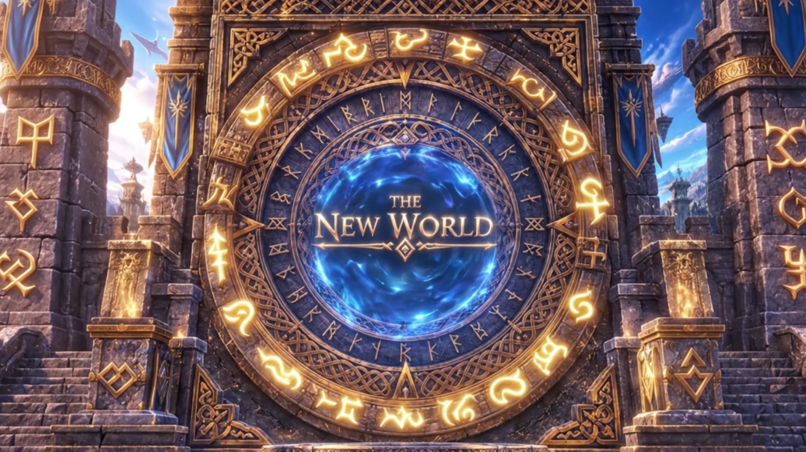

อยากรู้ตรงไหน ก็ไปสำรวจกัน
ออกสำรวจมิดการ์ดในรูปแบบใหม่ กับโลกเปิดที่รอให้คุณไปค้นพบ
MMORPG 3D · พีซีและมือถือ
เลือกคลาสที่ชอบ ชวนเพื่อนเข้าปาร์ตี้ แล้วออกสำรวจโลก Ragnarok แบบ 3D ไปสู้กับ MVP และผจญภัยด้วยกัน
เล่นฟรี มีการซื้อภายในเกม
ไปดูรายละเอียดเวอร์ชันพีซีได้ที่หน้าเกมบน Steam

โลกของเกม
โลก Ragnarok ที่คุ้นเคยกลับมาในรูปแบบ 3D ลองมองมิดการ์ดในมุมใหม่ แล้วออกเดินทางไปด้วยกัน
ออกสำรวจมิดการ์ดในรูปแบบใหม่ กับโลกเปิดที่รอให้คุณไปค้นพบ
จัดคลาสให้เข้ากันในปาร์ตี้ แล้วรวมพลเพื่อนร่วมกิลด์ไปสู้บอสด้วยกัน
MVP ก็ร่วมเดินทางกับคุณได้ เพราะในเกมสามารถเปลี่ยน MVP ให้เป็นพาหนะได้ด้วย
คลาสของคุณ การผจญภัยของคุณ
เลือกบทบาทที่ชอบในปาร์ตี้ แล้วลองค้นหาว่าตัวละครของคุณจะเล่นแบบไหนได้บ้าง
Druid สามารถสลับได้ระหว่างร่าง Werewolf, Wereraptor และ Human Arcanist
อยากลองอะไรใหม่ ๆ ไหม เกมมีระบบเปลี่ยนคลาส และรีเซ็ตสกิลกับค่าสถานะได้ฟรี
ความคืบหน้าในเกมซิงก์กันระหว่างพีซี มือถือ และแท็บเล็ต ปุ่มเล่นในหน้านี้จะพาไปยัง Steam สำหรับพีซี
ก่อนออกเดินทาง
เช็กสเปกเครื่องและการเปิดให้บริการในภูมิภาคของคุณก่อนเริ่มเล่นนะ
ข้อมูลสเปกอ้างอิงจาก Steam โดยหน้าที่ตรวจสอบยังไม่ได้ระบุระบบปฏิบัติการ หน่วยประมวลผล และการ์ดจอ ควรเช็กรายละเอียดล่าสุดก่อนเล่น
ดูสเปกเครื่อง ภาษาที่รองรับ และการเปิดให้บริการสำหรับบัญชีกับภูมิภาคของคุณ
ทำตามคำแนะนำจาก Steam และตัวเปิดเกมเพื่อเข้าเล่น
หน้า Steam ระบุว่าต้องมีบัญชี Gravity ซึ่งสร้างผ่านตัวเปิดเกมได้
รู้ไว้ก่อนเล่น
มีเรื่องเล็ก ๆ น้อย ๆ ที่อยากบอกก่อนเริ่มเล่น
เล่นฟรีได้ โดย Steam ระบุว่ามีการซื้อภายในเกมด้วย ลองดูข้อมูลการซื้อล่าสุดที่หน้าเกมบน Steam นะ
ปุ่มนี้มีไว้เพื่อไปยังหน้า Ragnarok: The New World บน Steam สำหรับพีซี คุณสามารถดูรายละเอียดเกมและทำตามขั้นตอนของ Steam ได้จากที่นั่น
คำอธิบายอย่างเป็นทางการระบุว่าความคืบหน้าซิงก์กันระหว่างพีซี มือถือ และแท็บเล็ต อย่าลืมเช็กเงื่อนไขการเข้าเล่นและอุปกรณ์ที่รองรับของแต่ละเวอร์ชัน
หน้า Steam ที่ตรวจสอบระบุว่ารองรับภาษาอังกฤษ อินโดนีเซีย ไทย และจีนตัวย่อ เช็กข้อมูลภาษาล่าสุดได้บน Steam
หน้า Steam ระบุว่าต้องมีบัญชี Gravity ซึ่งสร้างผ่านตัวเปิดเกมได้
Ragnarok: The New World เป็นอีกประสบการณ์หนึ่งในจักรวาล Ragnarok ที่นำเสนอในรูปแบบ 3D หน้านี้ไม่ได้อ้างว่าเป็นการจำลองเกมดั้งเดิม
RAGNAROK: THE NEW WORLD